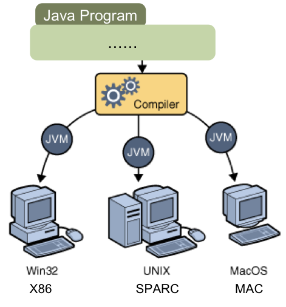

Index
持续更新中...
关于
讲师
曹春 caochun@gmail.com
余萍 yuping.nju@gmail.com
助教
张三
李四
王五
赵六
这题要考的!
为什么（又）要学Java？
- 缺学分
- 找工作
- 交朋友
- ...
缺学分的，这课不适合你
去年
- 选课：170人，拿到成绩：110
- 及格：92人（83%）
- 100~90：14人(13%)；90～80：35人(32%)；80~70:31人(28%)；70~60：12人(11%)
作业又多又难

葫芦娃系列作业
大作业遭到控诉
葫芦娃大战妖精
- 开发一个展现葫芦娃与妖精大战的图形化应用
- 请让七个兄弟和老爷爷以下图中的某种阵型在空间的左侧战队；请让妖精（蛇精、蝎子精、小喽啰）以下图中的某种阵型在空间右侧战队；
- 以上各生物体均实现为一个线程（注：此处要求大家用线程是为了验证各位是否掌握了多线程并发编程，实际上GUI应用中应该用Swing Timer来进行UI刷新）；
- 按空格键时所有生物体线程执行start()，向敌方前进；
- 按空格键时所有生物体线程执行start()，向敌方前进；
- 当某个生物体于敌方相遇（两者间的X轴距离和Y轴距离小于某个常量）时，选取一个概率决定双方生死，死者留下实体，生者寻找下一个敌人攻击；
- 某一方生物全部死亡时，结束。
也有挺过来的

也有挺过来的

也有挺过来的

找工作的，这课不是很适合你
目前看来，学JS、Python才是王道
WHY
java作为第一大语言主要用来做什么?他有什么优势导致这种现象？
https://www.zhihu.com/question/54880498
前导课程要求
至少一门高级程序设计语言
如果C++学得很好，特别是面向对象编程思想领悟到位，建议不选（但不接受免修不免考）。
Java相关课程（后续）
- 软件工程综合实验
- 大数据综合实验
- 软件体系结构
- 面向对象技术
- ...
交朋友的，加个QQ

课程网站
- 仓库：https://github.com/njuics/java-2019
- 课件: https://njuics.github.io/java-2019
- 作业：https://github.com/njuics/java-2019-homework

Java之父

James Gosling
历史
- 1990，Oak，家用电器等小型系统的程序语言
- 1995，Java发布，互联网编程语言, HotJava
HotJava

Java SDK
- JDK 1.02 (1995)
- Java 2 SDK v 1.2 (a.k.a JDK 1.2, 1998)
- Java 2 SDK v 1.4 (a.k.a JDK 1.4, 2002)
- ...
- Java 8, 9, 10, 11, 12
Java Editions
- Java Standard Edition (J2SE), to develop client-side standalone applications or applets
- Java Enterprise Edition (J2EE), to develop server-side applications such as Java servlets and Java ServerPages
- Java Micro Edition (J2ME), to develop applications for mobile devices such as cell phones
Java特性
- Simple
- Interpreted
- Secure
- Architecture-neutral
- Portable
JVM

Java IDE （Dead）
- IBM Visual Age for Java
- Microsoft Visual J++
- Borland JBuilder
- Forte by Sun MicroSystems
Java IDE （Dead）
- NetBeans https://netbeans.org/
- Eclipse http://eclipse.org/
- IDEA by IntelliJ https://www.jetbrains.com/idea/
教材

The forth edition，1400+ pages
Hello World
//This is my first java program.
package njuics.java2018;
public class HelloWorld {
public static void main(String[] args) {
System.out.println("Hello World!");
}
}
安装配置
https://docs.oracle.com/cd/E19182-01/820-7851/inst_cli_jdk_javahome_t/
编译
javac HelloWorld.java
运行
mv HelloWorld.class njuics/java2018
java njuics.java2018.HelloWorld

上册
- 1. 语言基础 (Introduction, Primitives, Operators, Controlling Exection)
- 2. 面向对象I （Introdction to Objects, Everything is an Object, Initialization & Cleanup)
- 3. 面向对象II (Access Control, Resuing Classes)
- 4. 面向对象III (Interfaces, Polymorphism, Inner Classes)
- 5. 面向对象设计原则（Object-oriented Design Principle）
中册
- 6. 异常处理 (Error Handling with Exceptions)
- 7. 类加载和自省
- 8. 集合框架 (Holding your objects, Strings, Arrays)
- 9. 类型 (Type Information, Generic, Container in Depth)
- 10. 标注和测试（Annotations/Testing）
- 11. 工程工具（Maven/Gradle/CI）
下册
- 12. 输入输出（I/O）
- 13. 并发编程（Concurrency）
- 14. 图形化（GUI）
- 15. 设计（Design Pattern）
- 16. Java框架（Components, IoC, MVC）